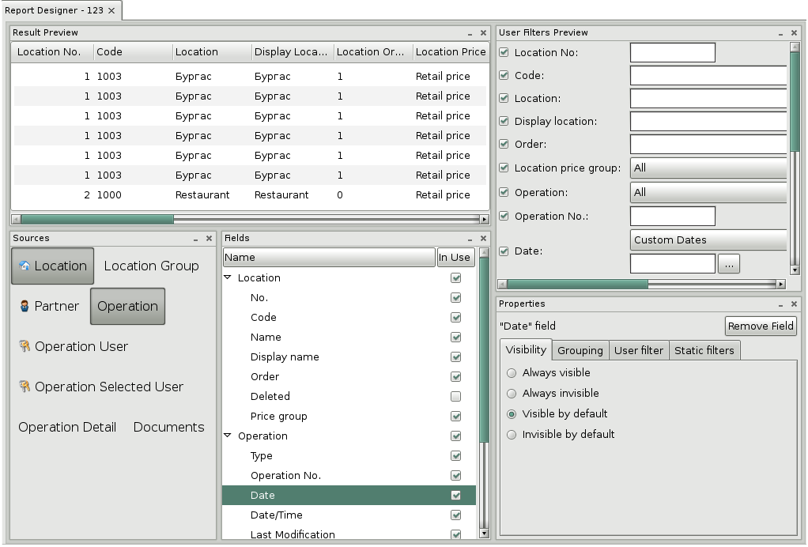
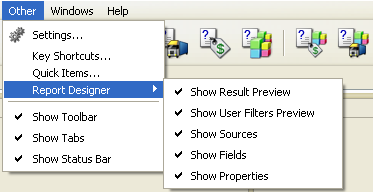
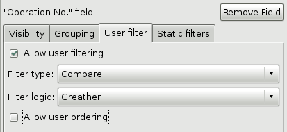
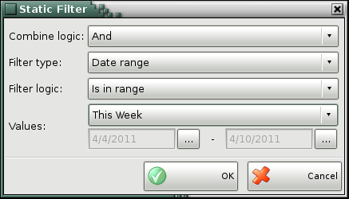
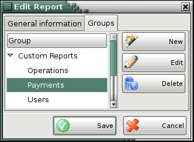

Report Designer
Report Designer represents a mechanism for creating individuals reports,
depending on the needs of each client. After being created these reports appear
in the Custom Reports menu and not differ from the
standart reports.
To open Report designer
choose Reports->User Reports->Edit
Reports->button New.

The module Report designer consists of five
sections - Result Preview, User Filters Preview, Sources, Fields and Properties.
You can disable and enable them from the menu Other->Report
Designer. It is active only when Report Designer is opened.

1. Sources
Section Sources
contains list of all tables in the base which can be used for creating reports.
When you select a source only a part of all sources will remain visible.
With those sources the chosen one can make a connection. For example if you
select Payment source only Partner, Location,
User and Payments type will remain visible for
choice.
2. Fields
Section Fields
contains all chosen sources and their fields. By default they are checked,
which means that they are visible in the report. Uncheck the
fileds which you don't want to see in your report and they will
be removed from the filter form.
3. Properties
In this section you can set different
properties of the filter like: level of visibility, filter
logic, filter type and grouping of the result.
3.1 Visibility
- determines the filter level of visibility:
-
Always visible - the filter
is without check box and always is visible in the result.
-
Always invisible - the filed
is visible in the filter form so that you can filter on it, but it
is invisible in the result.
-
Visible by default - the
filter is with check box that is checked and you can choose
whether to see the field in the result.
-
Invisible by default - the
filter is with check box that is not checked but you can choose
whether to see the field in the result.
3.2 Grouping
-
No grouping - the rows in
the result are not grouped by equal values.
-
Group together same values -
the rows in the result are grouped by equal values.
-
The maximal value - the rows
are grouped by maximal value
-
The minimal value - the rows
are grouped by minimal value
-
The average value - the rows
are grouped by average value
-
The sum of all values - the
rows are grouped by taking the sum of all values
-
The number of all values -
the rows are grouped by taking the number of all
values
3.3 User
filters
Allow user filtering
- determines the type of the filter
-
Filter type:
-
Find - finds result
comparing typed text. It is used for text fields as name, code, barcode and
others.
-
Compare - filter with
compare choice - greather, exact match, less. It is used for fields
with amounts, quantities and prices.
-
Range - filter with range
from given start to given end value. It is used for fields with document
numbers and date interval.
-
No filter - the filter is
inactive in order that you can not filter on it, but to be visible in
the result.
-
Filter logic for
Find:
-
Contains - finds
results that contain the entered text
-
Exact match - finds exact
match results
-
Starts with - finds
results that start with the entered text
-
Ends with - finds
results that end with the entered text
-
Filter logic for
Compare:
-
Greater
-
Greater or equal
-
Exact match
-
Less or equal
-
Less
Allow user ordering
- shows whether the selected field to be in the sort list and you can
sort the report by it.

3.4 Static
filters - you can create your own static filter if
you want to see results only for specific operation, for determined
period of time, for determined item, partner or user.
To add a static filter choose
Add button.
-
Combine logic - you can choose between And, And not, Or, Or not
-
AND - finds
the area where the conditions are recovered
-
AND NOT - if
the result does not satisfy the condition
-
OR - if the
result satisfies any of the conditions
-
OR NOT - or
if the result does not satisfy the condition
-
Filter type - It can be
find text results type, filter with compare conditions or range intervals. If
the chosen field has defined types in the database like operation type, item
type or user level then the filter offers you to select between one of
these types.
-
Filter logic - If
Find type is selected then in this option you can choose between
Contains, Exact match, Starts with, Ends with.
If Compare type is selected you can choose between
equals, more than, less than. If Range
type is selected you should enter start and end range values.
-
Values - It can be
listed types, fields for start and end values.

4. Result Preview
This section shows what will be
visualized in the report result.
5. User filters preview
User filter preview presents the filter
form of the report.
6. Preview and save the
report
Use Test button
to preview you report and to generate test result. If you want to change
something you can turn back to the report designer. To save the report use
the Save button. In the General
information tab enter the report name and in the
Groups tab select a group where you want to put
your report or create a new one. To exit report designer without saving the
changes press Close button.

�2006-2015
Microinvest, All rights reserved